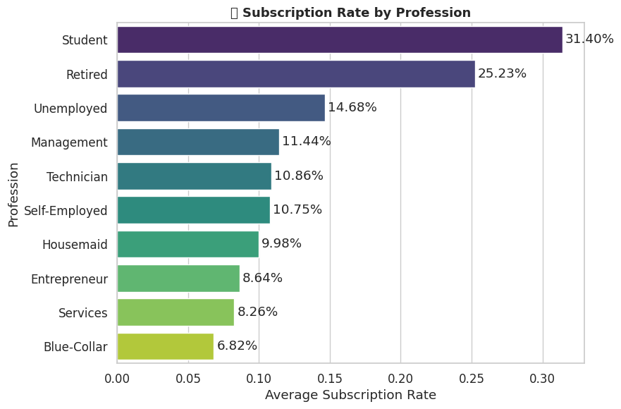

# STEP 1: Import Libraries
import pandas as pd
import numpy as np
import matplotlib.pyplot as plt
import seaborn as sns
from sklearn.model_selection import train_test_split
from sklearn.ensemble import RandomForestClassifier
from sklearn.metrics import (
classification_report, confusion_matrix, accuracy_score, roc_auc_score
)
from imblearn.over_sampling import SMOTE
pd.set_option("display.max_columns", None)
sns.set(style="whitegrid", palette="viridis", font_scale=1.1)
# STEP 2: Load Dataset
url = "https://raw.githubusercontent.com/byui-cse/cse450-course/master/data/bank.csv"
data = pd.read_csv(url)
print("✅ Data loaded successfully!")
print("Shape:", data.shape)
display(data.head())✅ Data loaded successfully!
Shape: (37069, 20)| age | job | marital | education | default | housing | loan | contact | month | day_of_week | campaign | pdays | previous | poutcome | emp.var.rate | cons.price.idx | cons.conf.idx | euribor3m | nr.employed | y | |
|---|---|---|---|---|---|---|---|---|---|---|---|---|---|---|---|---|---|---|---|---|
| 0 | 56 | housemaid | married | basic.4y | no | no | no | telephone | may | mon | 1 | 999 | 0 | nonexistent | 1.1 | 93.994 | -36.4 | 4.857 | 5191.0 | no |
| 1 | 57 | services | married | high.school | unknown | no | no | telephone | may | mon | 1 | 999 | 0 | nonexistent | 1.1 | 93.994 | -36.4 | 4.857 | 5191.0 | no |
| 2 | 37 | services | married | high.school | no | yes | no | telephone | may | mon | 1 | 999 | 0 | nonexistent | 1.1 | 93.994 | -36.4 | 4.857 | 5191.0 | no |
| 3 | 40 | admin. | married | basic.6y | no | no | no | telephone | may | mon | 1 | 999 | 0 | nonexistent | 1.1 | 93.994 | -36.4 | 4.857 | 5191.0 | no |
| 4 | 56 | services | married | high.school | no | no | yes | telephone | may | mon | 1 | 999 | 0 | nonexistent | 1.1 | 93.994 | -36.4 | 4.857 | 5191.0 | no |
# STEP 3: Data Cleaning & Transformation
data.replace("unknown", pd.NA, inplace=True)
data.fillna(data.mode().iloc[0], inplace=True)
data["pdays"] = data["pdays"].replace(999, -1)
education_mapping = {
"illiterate": 0,
"basic.4y": 4,
"basic.6y": 6,
"basic.9y": 9,
"high.school": 12,
"professional.course": 13,
"university.degree": 16,
"unknown": -1
}
data["education"] = data["education"].replace(education_mapping)
categorical_columns = [
"job", "marital", "default", "housing", "loan",
"contact", "month", "day_of_week", "poutcome"
]
data = pd.get_dummies(data, columns=categorical_columns, drop_first=True)
data["y"] = data["y"].replace({"no": 0, "yes": 1}).astype(int)
print("✅ Data cleaned and encoded successfully!")
print("Final shape:", data.shape)✅ Data cleaned and encoded successfully!
Final shape: (37069, 42)/tmp/ipython-input-1174679516.py:23: FutureWarning: Downcasting behavior in `replace` is deprecated and will be removed in a future version. To retain the old behavior, explicitly call `result.infer_objects(copy=False)`. To opt-in to the future behavior, set `pd.set_option('future.no_silent_downcasting', True)`
data["education"] = data["education"].replace(education_mapping)
/tmp/ipython-input-1174679516.py:33: FutureWarning: Downcasting behavior in `replace` is deprecated and will be removed in a future version. To retain the old behavior, explicitly call `result.infer_objects(copy=False)`. To opt-in to the future behavior, set `pd.set_option('future.no_silent_downcasting', True)`
data["y"] = data["y"].replace({"no": 0, "yes": 1}).astype(int)# STEP 4: Split Data
X = data.drop("y", axis=1)
y = data["y"]
X_train, X_test, y_train, y_test = train_test_split(
X, y, test_size=0.2, random_state=42, stratify=y
)
print("✅ Data split complete!")
print("Training size:", X_train.shape)
print("Testing size:", X_test.shape)
print("\nClass balance BEFORE SMOTE:\n", y_train.value_counts(normalize=True))✅ Data split complete!
Training size: (29655, 41)
Testing size: (7414, 41)
Class balance BEFORE SMOTE:
y
0 0.886495
1 0.113505
Name: proportion, dtype: float64# STEP 5: Balance Data using SMOTE
smote = SMOTE(random_state=42, sampling_strategy=1.0)
X_train_resampled, y_train_resampled = smote.fit_resample(X_train, y_train)
print("✅ SMOTE applied successfully!")
print("Training size after SMOTE:", X_train_resampled.shape)
print("Class balance AFTER SMOTE:\n", y_train_resampled.value_counts(normalize=True))✅ SMOTE applied successfully!
Training size after SMOTE: (52578, 41)
Class balance AFTER SMOTE:
y
0 0.5
1 0.5
Name: proportion, dtype: float64# STEP 6: Train Random Forest Classifier
rf = RandomForestClassifier(
n_estimators=200,
max_depth=10,
min_samples_leaf=25,
random_state=42,
n_jobs=-1
)
rf.fit(X_train_resampled, y_train_resampled)
print("✅ Random Forest model trained successfully!")✅ Random Forest model trained successfully!# STEP 7: Evaluate Model
y_pred = rf.predict(X_test)
y_proba = rf.predict_proba(X_test)[:, 1]
print("\nüìä Model Performance:")
print("Accuracy:", accuracy_score(y_test, y_pred))
print("ROC-AUC Score:", roc_auc_score(y_test, y_proba))
print("\nClassification Report:")
print(classification_report(y_test, y_pred, target_names=["No", "Yes"]))
cm = confusion_matrix(y_test, y_pred)
plt.figure(figsize=(6,4))
sns.heatmap(cm, annot=True, fmt="d", cmap="Blues")
plt.title("Confusion Matrix")
plt.xlabel("Predicted")
plt.ylabel("Actual")
plt.tight_layout()
plt.show()
üìä Model Performance:
Accuracy: 0.8626922039384948
ROC-AUC Score: 0.7836544369476495
Classification Report:
precision recall f1-score support
No 0.95 0.90 0.92 6572
Yes 0.43 0.60 0.50 842
accuracy 0.86 7414
macro avg 0.69 0.75 0.71 7414
weighted avg 0.89 0.86 0.87 7414
# STEP 8: Feature Importance
feature_importance = pd.Series(rf.feature_importances_, index=X.columns).sort_values(ascending=False)
top_features = feature_importance.head(10)
plt.figure(figsize=(8,5))
sns.barplot(x=top_features.values, y=top_features.index, palette="viridis")
plt.title("Top 10 Most Important Features")
plt.xlabel("Importance Score")
plt.ylabel("Feature")
plt.tight_layout()
plt.show()
print("\nüèÜ Top 10 Important Features:")
print(top_features)/tmp/ipython-input-2471977237.py:9: FutureWarning:
Passing `palette` without assigning `hue` is deprecated and will be removed in v0.14.0. Assign the `y` variable to `hue` and set `legend=False` for the same effect.
sns.barplot(x=top_features.values, y=top_features.index, palette="viridis")
üèÜ Top 10 Important Features:
euribor3m 0.184502
nr.employed 0.136018
emp.var.rate 0.091356
cons.conf.idx 0.089699
cons.price.idx 0.062262
pdays 0.044008
poutcome_success 0.039110
housing_yes 0.030035
marital_married 0.029772
day_of_week_wed 0.029734
dtype: float64# STEP 9: Business Insights Visuals
marital_cols = [c for c in data.columns if "marital_" in c]
marital_summary = (
data.melt(id_vars="y", value_vars=marital_cols, var_name="MaritalStatus", value_name="Active")
.query("Active == 1")
.groupby("MaritalStatus")["y"].mean()
.sort_values(ascending=False)
)
marital_summary.index = marital_summary.index.str.replace("marital_", "").str.title()
plt.figure(figsize=(7,5))
sns.barplot(x=marital_summary.index, y=marital_summary.values, palette="crest")
plt.title("üíç Subscription Rate by Marital Status", fontsize=13, weight='bold')
plt.ylabel("Average Subscription Rate")
plt.xlabel("Marital Status")
for i, val in enumerate(marital_summary.values):
plt.text(i, val + 0.002, f"{val*100:.2f}%", ha='center', va='bottom')
plt.tight_layout()
plt.show()
job_cols = [col for col in data.columns if "job_" in col]
job_summary = (
data.melt(id_vars="y", value_vars=job_cols, var_name="Job", value_name="Active")
.query("Active == 1")
.groupby("Job")["y"].mean()
.sort_values(ascending=False)
)
job_summary.index = job_summary.index.str.replace("job_", "").str.title()
plt.figure(figsize=(9,6))
sns.barplot(x=job_summary.values, y=job_summary.index, palette="viridis")
plt.title("üíº Subscription Rate by Profession", fontsize=13, weight='bold')
plt.xlabel("Average Subscription Rate")
plt.ylabel("Profession")
for i, val in enumerate(job_summary.values):
plt.text(val + 0.002, i, f"{val*100:.2f}%", va='center')
plt.tight_layout()
plt.show()
campaign_effect = data.groupby("campaign")["y"].mean()
plt.figure(figsize=(7,5))
plt.plot(campaign_effect.index, campaign_effect.values, marker="o")
plt.title("☎️ Success Rate vs. Number of Contacts")
plt.xlabel("Number of Contacts in Campaign")
plt.ylabel("Subscription Rate")
plt.grid(alpha=0.3)
plt.tight_layout()
plt.show()/tmp/ipython-input-1354924602.py:16: FutureWarning:
Passing `palette` without assigning `hue` is deprecated and will be removed in v0.14.0. Assign the `x` variable to `hue` and set `legend=False` for the same effect.
sns.barplot(x=marital_summary.index, y=marital_summary.values, palette="crest")
/tmp/ipython-input-1354924602.py:22: UserWarning: Glyph 128141 (\N{RING}) missing from font(s) DejaVu Sans.
plt.tight_layout()
/usr/local/lib/python3.12/dist-packages/IPython/core/pylabtools.py:151: UserWarning: Glyph 128141 (\N{RING}) missing from font(s) DejaVu Sans.
fig.canvas.print_figure(bytes_io, **kw)/tmp/ipython-input-1354924602.py:36: FutureWarning:
Passing `palette` without assigning `hue` is deprecated and will be removed in v0.14.0. Assign the `y` variable to `hue` and set `legend=False` for the same effect.
sns.barplot(x=job_summary.values, y=job_summary.index, palette="viridis")
/tmp/ipython-input-1354924602.py:42: UserWarning: Glyph 128188 (\N{BRIEFCASE}) missing from font(s) DejaVu Sans.
plt.tight_layout()
/usr/local/lib/python3.12/dist-packages/IPython/core/pylabtools.py:151: UserWarning: Glyph 128188 (\N{BRIEFCASE}) missing from font(s) DejaVu Sans.
fig.canvas.print_figure(bytes_io, **kw)
# STEP 10: Predict on Holdout Data
holdout = pd.read_csv("https://raw.githubusercontent.com/byui-cse/cse450-course/master/data/bank_holdout_test.csv")
holdout.replace("unknown", pd.NA, inplace=True)
holdout.fillna(data.mode().iloc[0], inplace=True)
holdout["pdays"] = holdout["pdays"].replace(999, -1)
holdout["education"] = holdout["education"].replace(education_mapping)
holdout = pd.get_dummies(holdout, columns=categorical_columns, drop_first=True)
missing_cols = set(X.columns) - set(holdout.columns)
for c in missing_cols:
holdout[c] = 0
holdout = holdout[X.columns]
predictions = rf.predict(holdout)
pd.DataFrame(predictions, columns=["predictions"]).to_csv("team3-module2-predictions2.0.csv", index=False)
print("üìÅ Predictions saved to: team3-module2-predictions2.0.csv")üìÅ Predictions saved to: team3-module2-predictions2.0.csv/tmp/ipython-input-3289667163.py:11: FutureWarning: Downcasting behavior in `replace` is deprecated and will be removed in a future version. To retain the old behavior, explicitly call `result.infer_objects(copy=False)`. To opt-in to the future behavior, set `pd.set_option('future.no_silent_downcasting', True)`
holdout["education"] = holdout["education"].replace(education_mapping)import pandas as pd
preds = pd.read_csv("team3-module2-predictions2.0.csv")
print("✅ File Loaded! Total Predictions:", len(preds))
percentages = preds["predictions"].value_counts(normalize=True) * 100
print("\nüìä Prediction Breakdown (%):")
print(percentages.round(2))
import matplotlib.pyplot as plt
plt.figure(figsize=(5,5))
plt.pie(percentages, labels=percentages.index, autopct='%1.2f%%', colors=["skyblue", "lightgreen"])
plt.title("Distribution of Predictions (0 = No, 1 = Yes)")
plt.show()✅ File Loaded! Total Predictions: 4119
üìä Prediction Breakdown (%):
predictions
0 85.14
1 14.86
Name: proportion, dtype: float64